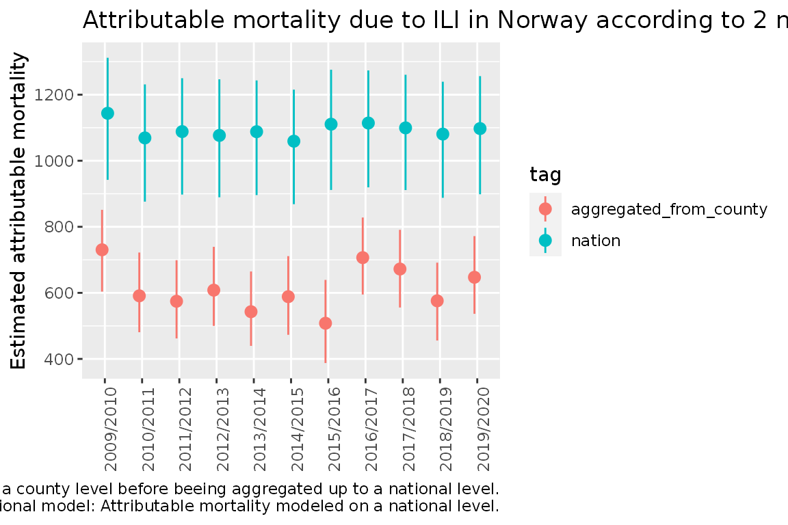
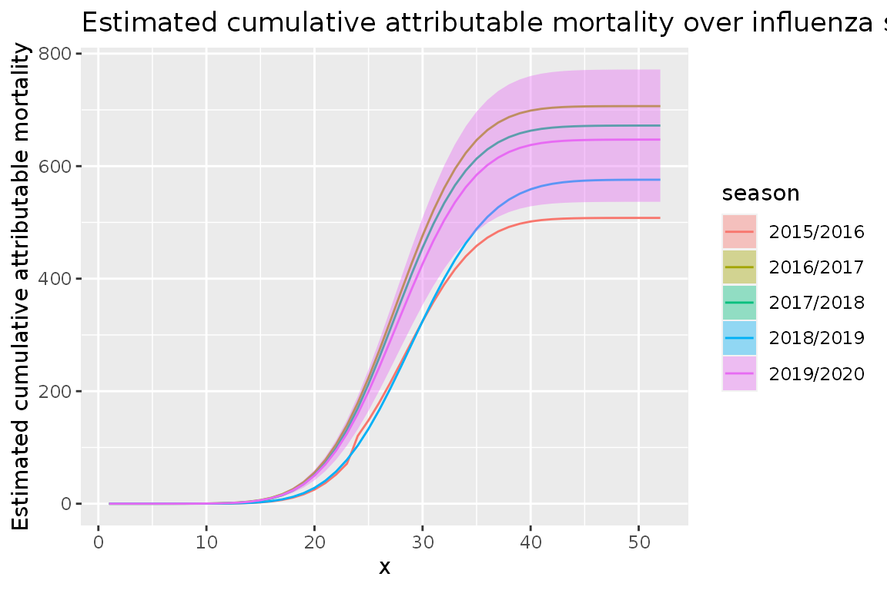

Introduction to attrib
Aurora Hofman
2020-07-21
intro.Rmdlibrary(attrib) #> PACKAGE: attrib #> Version: 2020.08.19 at 09:03
Introduction
attrib provides a way of estimating what the mortality would have been if some given exposures are set to a reference value. By using simulations from the posterior distribution of all coefficients we can easily aggregate over time and locations while still estimating valid credible intervals.
This vignette will go through:
- how to use
fit_attribto fit the model to the data - how to use
est_attribto estimate the mortality under different scenarios (i.e. when the exposures are at reference values and at observed values) - some examples of usages of the resulting dataset
Data example
We will use the datasets fake_data_county and fake_data_nation.
fake_data_county consists of fake mortality data for all counties of Norway on a weekly basis from 2010 until 2020. The dataset consists of the following features:
- location_code: Location code of the different counties
- week: Week number
- season: Years of the season
- year: Year
- yrwk: Year and week
- x: Number of weeks from the start of the season
- pop: Population size
- pr100_ili: Percentage of doctors consultations diagnosed with influenza like illnesses
- pr100_ili_lag_1: pr_100_ili lagged with one week
- temperature: Temperature
- temperature_high: number of heatwaves
- deaths: number of deaths
fake_data_nation is a similar dataset at the national level.
data_fake_county <- attrib::data_fake_county data_fake_nation <- attrib::data_fake_nation head(data_fake_county, 5) #> location_code week season year yrwk x pop pr100_ili #> 1: county03 1 2009/2010 2010 2010-01 24 693494 0.5302766 #> 2: county03 1 2010/2011 2011 2011-01 24 693494 0.7234059 #> 3: county03 1 2011/2012 2012 2012-01 24 693494 1.7817489 #> 4: county03 1 2012/2013 2013 2013-01 24 693494 1.6000083 #> 5: county03 1 2013/2014 2014 2014-01 24 693494 1.6037883 #> pr100_ili_lag_1 temperature temperature_high deaths #> 1: 0.4496182 -0.94325234 0 103 #> 2: 0.5359123 0.01462311 0 96 #> 3: 1.8919261 -2.03893188 0 105 #> 4: 1.3909804 -6.02035548 0 97 #> 5: 1.3942666 -1.72146124 0 114
In this example we will look at the exposures pr100_ili_lag_1 and temperature_high and calculate the attributable mortality due to these exposures.
Fitting using fit_attrib
County level
We want to estimate the attributable mortality due to ILI and heatwaves. attrib lets us fit models with both fixed and random effect and offsets using linear mixed models (LMM).
We use the glmer function from the lme4 package. In practice, this means we must specify the response, offsets, the fixed effects, and the random effects. In our case we will model the response deaths as a function of:
- the fixed effects:
- temperature_high
- pr100_ili_lag_1
- sin(2 * pi * (week - 1) / 52)
- cos(2 * pi * (week - 1) / 52)
- the random effects:
- (1|location_code)
- (pr100_ili_lag_1|season)
- the offset:
- log(pop)
#response response <- "deaths" # fixed effects fixef_county <- " temperature_high + pr100_ili_lag_1 + sin(2 * pi * (week - 1) / 52) + cos(2 * pi * (week - 1) / 52)" #random effects ranef_county <- "(1|location_code) + (pr100_ili_lag_1|season)" #offset offset_county <- "log(pop)"
Now we fit the model using fit_attrib.
fit_county <- fit_attrib(data_fake_county, response = response, fixef = fixef_county, ranef = ranef_county, offset = offset_county)
This results in the following fit:
fit_county #> Generalized linear mixed model fit by maximum likelihood (Laplace #> Approximation) [glmerMod] #> Family: poisson ( log ) #> Formula: deaths ~ temperature_high + pr100_ili_lag_1 + sin(2 * pi * (week - #> 1)/52) + cos(2 * pi * (week - 1)/52) + offset(log(pop)) + #> (1 | location_code) + (pr100_ili_lag_1 | season) #> Data: data #> AIC BIC logLik deviance df.resid #> 44645.63 44706.39 -22313.82 44627.63 6305 #> Random effects: #> Groups Name Std.Dev. Corr #> location_code (Intercept) 0.000000 #> season (Intercept) 0.000000 #> pr100_ili_lag_1 0.004719 NaN #> Number of obs: 6314, groups: location_code, 11; season, 11 #> Fixed Effects: #> (Intercept) temperature_high #> -8.79616 0.08188 #> pr100_ili_lag_1 sin(2 * pi * (week - 1)/52) #> 0.02796 0.01878 #> cos(2 * pi * (week - 1)/52) #> 0.07498 #> convergence code 0; 0 optimizer warnings; 1 lme4 warnings
Note that fit has the added attributes offset (saving the offset name) and fit_fix (the coefficients of the linear model fitted on only the fixed effects). These are needed by est_attrib to create the dataset containing only the fixed effects.
National level
We estimate the same as before But on a national level, meaning we remove the random effect (1|location_code) since we only have one location code. This gives the following features:
- the fixed effects:
- temperature_high
- pr100_ili_lag_1
- sin(2 * pi * (week - 1) / 52)
- cos(2 * pi * (week - 1) / 52)
- the random effects:
- (pr100_ili_lag_1|season)
- the offset:
- log(pop)
# take in the fixed effects response = "deaths" fixef_nation <- "temperature_high + pr100_ili_lag_1 + sin(2 * pi * (week - 1) / 52) + cos(2 * pi * (week - 1) / 52)" #take in the random effects ranef_nation <- "(pr100_ili_lag_1|season)" # take in the offset offset_nation <- "log(pop)"
fit_nation <- fit_attrib(data_fake_nation, response = response, fixef = fixef_nation, ranef = ranef_nation, offset = offset_nation)
Using the sim function
The sim function can be used to generate simulations for all the rows in our data.
It first generates n_sim simulations from the posterior distribution of the coefficients from out fit before applying these coefficients on our dataset generating n_sim simulations and expected mortality for each line. This is quite generic. Hence if the goal is to compute attributable mortality or incident risk ratios we use est_attrib as shown in a later part of the vignette.
n_sim <- 20 sim_data <- sim(fit_nation, data_fake_nation, n_sim) head(sim_data[id_row == 1], 5) #> week season year yrwk x location_code pop pr100_ili #> 1: 1 2009/2010 2010 2010-01 24 norge 5367580 1.160403 #> 2: 1 2009/2010 2010 2010-01 24 norge 5367580 1.160403 #> 3: 1 2009/2010 2010 2010-01 24 norge 5367580 1.160403 #> 4: 1 2009/2010 2010 2010-01 24 norge 5367580 1.160403 #> 5: 1 2009/2010 2010 2010-01 24 norge 5367580 1.160403 #> pr100_ili_lag_1 temperature_high deaths id_row sim_id sim_value #> 1: 1.100072 0 891 1 1 902.4828 #> 2: 1.100072 0 891 1 2 900.5043 #> 3: 1.100072 0 891 1 3 904.7145 #> 4: 1.100072 0 891 1 4 904.3953 #> 5: 1.100072 0 891 1 5 894.1217
We can see that we now have multiple expected mortalities for the same dataline. This is due to the coefficient simulations.
Estimating attributable mortality using est_attrib
To estimate attributable mortality we simulate:
- the estimated mortality for observed exposures
- the estimated mortality for the exposures set to reference values
This is easily done using est_attrib.
We need to give the fit, the dataset, the exposures with reference values, and the number of simulations. est_attrib will then using the arm::sim function to generate simulations of the underlying posterior distribution. attrib::sim will then combine the simulated coefficients to estimate the modeled outcome (i.e. number of deaths) for each simulation.
exposures <- list( "temperature_high" = 0, "pr100_ili_lag_1" = 0) n_sim <- 20 est_attrib_sim_county <- attrib::est_attrib(fit_county, data_fake_county, exposures = exposures, n_sim = n_sim) est_attrib_sim_nation <- attrib::est_attrib(fit_nation, data_fake_nation, exposures = exposures, n_sim = n_sim) head(est_attrib_sim_county, 5) #> location_code week season year yrwk x pop pr100_ili #> 1: county03 1 2009/2010 2010 2010-01 24 693494 0.5302766 #> 2: county03 1 2010/2011 2011 2011-01 24 693494 0.7234059 #> 3: county03 1 2011/2012 2012 2012-01 24 693494 1.7817489 #> 4: county03 1 2012/2013 2013 2013-01 24 693494 1.6000083 #> 5: county03 1 2013/2014 2014 2014-01 24 693494 1.6037883 #> pr100_ili_lag_1 temperature temperature_high deaths id sim_id #> 1: 0.4496182 -0.94325234 0 103 1 1 #> 2: 0.5359123 0.01462311 0 96 2 1 #> 3: 1.8919261 -2.03893188 0 105 3 1 #> 4: 1.3909804 -6.02035548 0 97 4 1 #> 5: 1.3942666 -1.72146124 0 114 5 1 #> sim_value_exposures=observed sim_value_temperature_high=0 #> 1: 113.7426 113.7426 #> 2: 114.9688 114.9688 #> 3: 118.7915 118.7915 #> 4: 118.8655 118.8655 #> 5: 117.4879 117.4879 #> sim_value_pr100_ili_lag_1=0 #> 1: 111.8250 #> 2: 113.0041 #> 3: 111.7086 #> 4: 113.5457 #> 5: 112.6848
We can see in the above dataset that the columns id, sim_id, sim_value_exposures=observed, sim_value_temperature_high=0, sim_value_pr100_ili_lag_1=0 are added to the previous set of columns. For each row in the original dataset we now have 20 rows, one for each of the simulations done by est_attrib. In each row we see the estimate of the number of deaths given a reference value for sim_value_temperature_high and sim_value_pr100_ili_lag_1.
To make the data processing easier later we convert the dataset from wide to long form and collapse the estimated mortality
est_attrib_county_long<-data.table::melt.data.table(est_attrib_sim_county, id.vars = c("location_code", "season", "x", "week", "id", "sim_id", "deaths", "sim_value_exposures=observed"), measure.vars = c("sim_value_temperature_high=0", "sim_value_pr100_ili_lag_1=0")) data.table::setnames(est_attrib_county_long, "variable", "attr") head(est_attrib_county_long, 5) #> location_code season x week id sim_id deaths #> 1: county03 2009/2010 24 1 1 1 103 #> 2: county03 2010/2011 24 1 2 1 96 #> 3: county03 2011/2012 24 1 3 1 105 #> 4: county03 2012/2013 24 1 4 1 97 #> 5: county03 2013/2014 24 1 5 1 114 #> sim_value_exposures=observed attr value #> 1: 113.7426 sim_value_temperature_high=0 113.7426 #> 2: 114.9688 sim_value_temperature_high=0 114.9688 #> 3: 118.7915 sim_value_temperature_high=0 118.7915 #> 4: 118.8655 sim_value_temperature_high=0 118.8655 #> 5: 117.4879 sim_value_temperature_high=0 117.4879
We can see that the columns sim_value_temperature_high=0, sim_value_pr100_ili_lag_1=0 are now collapsed into the new column attr and value with attr describing which exposure we have and value giving the corresponding reference value.
est_attrib_nation_long<-data.table::melt.data.table(est_attrib_sim_nation, id.vars = c("location_code", "season", "x", "week", "id", "sim_id", "deaths", "sim_value_exposures=observed"), measure.vars = c("sim_value_temperature_high=0", "sim_value_pr100_ili_lag_1=0")) data.table::setnames(est_attrib_nation_long, "variable", "attr")
Compare the national data to data aggregated from county to national level.
We will now aggregate our two simulated datasets (one on a county level and one on a national level) to aid in comparison.
Aggregate from county/weekly to national/seasonal
We proceed by aggregating the county dataset to the national/seasonal level. Afterwards we calculate the expected attributable mortality, exp_attr, by subtracting value (the simulated expected number of deaths given the reference value of the exposure) from the sim_value_exposures=observed.
To be able to separate this dataset from the other we add a tag.
aggregated_county_to_nation <- est_attrib_county_long[,.( "sim_value_exposures=observed" = sum(`sim_value_exposures=observed`), value = sum(value), deaths = sum(deaths) ), keyby = .(season, attr, sim_id)] # Add exp_attr, exp_irr and a tag. aggregated_county_to_nation[, exp_attr:= (`sim_value_exposures=observed` - value)] aggregated_county_to_nation[, tag := "aggregated_from_county"] head(aggregated_county_to_nation, 5) #> season attr sim_id sim_value_exposures=observed #> 1: 2009/2010 sim_value_temperature_high=0 1 44182.53 #> 2: 2009/2010 sim_value_temperature_high=0 2 44279.76 #> 3: 2009/2010 sim_value_temperature_high=0 3 43948.08 #> 4: 2009/2010 sim_value_temperature_high=0 4 44382.50 #> 5: 2009/2010 sim_value_temperature_high=0 5 44265.91 #> value deaths exp_attr tag #> 1: 43777.90 44421 404.6329 aggregated_from_county #> 2: 43867.55 44421 412.2057 aggregated_from_county #> 3: 43560.22 44421 387.8599 aggregated_from_county #> 4: 43947.93 44421 434.5713 aggregated_from_county #> 5: 43863.96 44421 401.9459 aggregated_from_county
Aggregating the national model per season
For the national model we aggregate over seasons and create exp_attr in the same way as above.
aggregated_nation <- est_attrib_nation_long[, .( "sim_value_exposures=observed" = sum(`sim_value_exposures=observed`), value = sum(value), deaths = sum(deaths) ), keyby = .(season, attr, sim_id)] aggregated_nation[, exp_attr:= (`sim_value_exposures=observed` - value)] aggregated_nation[, tag:= "nation"] head(aggregated_nation, 5) #> season attr sim_id sim_value_exposures=observed #> 1: 2009/2010 sim_value_temperature_high=0 1 44342.05 #> 2: 2009/2010 sim_value_temperature_high=0 2 44438.18 #> 3: 2009/2010 sim_value_temperature_high=0 3 44531.94 #> 4: 2009/2010 sim_value_temperature_high=0 4 44402.39 #> 5: 2009/2010 sim_value_temperature_high=0 5 44067.18 #> value deaths exp_attr tag #> 1: 44342.05 44421 0 nation #> 2: 44438.18 44421 0 nation #> 3: 44531.94 44421 0 nation #> 4: 44402.39 44421 0 nation #> 5: 44067.18 44421 0 nation
For simplicity we data.table::rbindlist the two datasets together.
Calculate simulation quantiles.
The next thing to do is to aggregate away the simulations. The benefits of having the simulations is the possibility it gives to efficiently compute all desired quantiles. For this example we will use the .05, .5 and .95 quantiles.
# Quantile functins q05 <- function(x){ return(quantile(x, 0.05)) } q95 <- function(x){ return(quantile(x, 0.95)) }
We compute the quantiles for exp_attr in the following way.
col_names <- colnames(data_national) data.table::setkeyv(data_national, col_names[!col_names %in% c("exp_attr", "sim_id", "sim_value_exposures=observed", "value", "deaths")]) aggregated_sim_seasonal_data_national<- data_national[, unlist(recursive = FALSE, lapply(.(median = median, q05 = q05, q95 = q95), function(f) lapply(.SD, f) )), by = eval(data.table::key(data_national)), .SDcols = c("exp_attr")] head(aggregated_sim_seasonal_data_national,5) #> season attr tag #> 1: 2009/2010 sim_value_temperature_high=0 aggregated_from_county #> 2: 2009/2010 sim_value_temperature_high=0 nation #> 3: 2009/2010 sim_value_pr100_ili_lag_1=0 aggregated_from_county #> 4: 2009/2010 sim_value_pr100_ili_lag_1=0 nation #> 5: 2010/2011 sim_value_temperature_high=0 aggregated_from_county #> median.exp_attr q05.exp_attr q95.exp_attr #> 1: 410.4090 387.4485 434.8685 #> 2: 0.0000 0.0000 0.0000 #> 3: 724.3595 561.4102 860.5979 #> 4: 1152.9718 1072.1143 1242.3736 #> 5: 433.9758 411.8339 464.6936
We can now see that we have credible intervals and estimates for attributable deaths for all exposures.
Plot to compare the national with the aggregated county to national model
To be able to compare the two models we make a point range plot using ggplot2.
q <- ggplot(aggregated_sim_seasonal_data_national[attr == "sim_value_pr100_ili_lag_1=0"], aes(x = season, y = median.exp_attr, group = tag, color = tag)) q <- q + geom_pointrange(aes(x = season, y = median.exp_attr, ymin = q05.exp_attr, ymax = q95.exp_attr), position = position_dodge(width = 0.3)) q <- q + ggtitle("Attributable mortality due to ILI in Norway according to 2 models") q <- q + scale_y_continuous("Estimated attributable mortality") q <- q + theme(axis.text.x = element_text(angle = 90),axis.title.x=element_blank()) q <- q + labs(caption = glue::glue("Aggregated county model: Attributable mortality modeled on a county level before beeing aggregated up to a national level.\n National model: Attributable mortality modeled on a national level.")) q

Comparing cumulative sums over seasons
When operating on the national level, we prefer to aggregate the county model to national level (instead of using the national model). This ensures consistent results at all geographical levels.
aggregated_county_to_nation <- est_attrib_county_long[, .( "sim_value_exposures=observed" = sum(`sim_value_exposures=observed`), value = sum(value), deaths = sum(deaths) ), keyby = .(season, x, week, attr, sim_id)] aggregated_county_to_nation[, exp_attr:= (`sim_value_exposures=observed` - value)] aggregated_county_to_nation[, exp_irr:= (`sim_value_exposures=observed` /value)] head(aggregated_county_to_nation,5) #> season x week attr sim_id #> 1: 2009/2010 1 30 sim_value_temperature_high=0 1 #> 2: 2009/2010 1 30 sim_value_temperature_high=0 2 #> 3: 2009/2010 1 30 sim_value_temperature_high=0 3 #> 4: 2009/2010 1 30 sim_value_temperature_high=0 4 #> 5: 2009/2010 1 30 sim_value_temperature_high=0 5 #> sim_value_exposures=observed value deaths exp_attr exp_irr #> 1: 790.6365 754.0085 816 36.62796 1.048578 #> 2: 787.8854 750.6123 816 37.27306 1.049657 #> 3: 785.5426 750.4366 816 35.10599 1.046781 #> 4: 792.3190 753.0106 816 39.30846 1.052202 #> 5: 788.9106 752.5414 816 36.36917 1.048328
Again we compute the quantiles.
col_names <- colnames(aggregated_county_to_nation) data.table::setkeyv(aggregated_county_to_nation, col_names[!col_names %in% c("exp_attr", "exp_irr","sim_id", "exposures", "sim_value_exposures=observed", "value")]) aggregated_county_to_nation_weekly <- aggregated_county_to_nation[, unlist(recursive = FALSE, lapply(.(median = median, q05 = q05, q95 = q95), function(f) lapply(.SD, f) )), by=eval(data.table::key(aggregated_county_to_nation)), .SDcols = c("exp_attr", "exp_irr")]
We then estimate the cumulative sums of attributable mortality and corresponding credible intervals.
aggregated_county_to_nation_weekly[, cumsum := cumsum(median.exp_attr), by = .( attr, season)] aggregated_county_to_nation_weekly[, cumsum_q05 := cumsum(q05.exp_attr), by = .( attr, season)] aggregated_county_to_nation_weekly[, cumsum_q95 := cumsum(q95.exp_attr), by = .( attr, season)] head(aggregated_county_to_nation_weekly, 5) #> season x week attr deaths median.exp_attr #> 1: 2009/2010 1 30 sim_value_temperature_high=0 816 37.127912074 #> 2: 2009/2010 1 30 sim_value_pr100_ili_lag_1=0 816 0.000000000 #> 3: 2009/2010 2 31 sim_value_temperature_high=0 854 79.421461048 #> 4: 2009/2010 2 31 sim_value_pr100_ili_lag_1=0 854 0.002328786 #> 5: 2009/2010 3 32 sim_value_temperature_high=0 777 44.600319929 #> median.exp_irr q05.exp_attr q05.exp_irr q95.exp_attr q95.exp_irr #> 1: 1.049582 35.069102838 1.046726 39.336026218 1.052249 #> 2: 1.000000 0.000000000 1.000000 0.000000000 1.000000 #> 3: 1.105884 74.967862746 1.099734 84.187160565 1.111632 #> 4: 1.000003 0.001796263 1.000002 0.002763202 1.000003 #> 5: 1.059293 42.109977119 1.055877 47.254250494 1.062484 #> cumsum cumsum_q05 cumsum_q95 #> 1: 3.712791e+01 3.506910e+01 3.933603e+01 #> 2: 0.000000e+00 0.000000e+00 0.000000e+00 #> 3: 1.165494e+02 1.100370e+02 1.235232e+02 #> 4: 2.328786e-03 1.796263e-03 2.763202e-03 #> 5: 1.611497e+02 1.521469e+02 1.707774e+02
We can then plot the estimated cumulative attributable mortality over influenza seasons in Norway
library(ggplot2) q <- ggplot( data = aggregated_county_to_nation_weekly[ season %in% c( "2015/2016", "2016/2017", "2017/2018", "2018/2019", "2019/2020" ) & attr == "sim_value_pr100_ili_lag_1=0" ], aes( x = x, y = cumsum, group = season, color = season, fill = season ) ) q <- q + geom_line() q <- q + geom_ribbon( data = aggregated_county_to_nation_weekly[ season %in% c("2019/2020") & attr == "sim_value_pr100_ili_lag_1=0" ], aes( ymin = cumsum_q05, ymax = cumsum_q95 ), alpha = 0.4, colour = NA ) q <- q + scale_y_continuous("Estimated cumulative attributable mortality") q <- q + ggtitle("Estimated cumulative attributable mortality over influenza seasons in Norway") q

We can also plot the estimated weekly attributable mortality in Norway
q <- ggplot( data = aggregated_county_to_nation_weekly[attr == "sim_value_pr100_ili_lag_1=0"], aes(x = x, y = cumsum, group = season) ) q <- q + geom_line( data = aggregated_county_to_nation_weekly[ season != "2019/2020" & attr == "sim_value_pr100_ili_lag_1=0" ], aes( x = x, y = median.exp_attr, group = season ), color = "grey" ) q <- q + geom_line( data = aggregated_county_to_nation_weekly[ season == "2019/2020" & attr == "sim_value_pr100_ili_lag_1=0" ], aes( x = x, y = median.exp_attr, group = season ), color = "blue" ) q <- q + geom_ribbon( data = aggregated_county_to_nation_weekly[ season == "2019/2020" & attr == "sim_value_pr100_ili_lag_1=0" ], aes( x = x, ymin = q05.exp_attr, ymax = q95.exp_attr ), fill = "blue", alpha=0.4 ) q <- q + scale_y_continuous("Estimated attributable mortality") q <- q + ggtitle("Estimated mortality due to ILI per week") q

Incident rate ratio
Until now we have focused on estimating attributable mortality. Now we will investigate computing the incident rate ratio (IRR) for pr100_ili_lag_1. To do this we will use the fit made by fit_attrib on the county dataset but we will change the values for pr100_ili_lag_1 to 1 (IRRs are generally expressed as the effect of the exposure changing from 0 to 1).
data_fake_county_irr <- data.table::copy(data_fake_county) data_fake_county_irr[, pr100_ili_lag_1 := 1] head(data_fake_county_irr, 5) #> location_code week season year yrwk x pop pr100_ili #> 1: county03 1 2009/2010 2010 2010-01 24 693494 0.5302766 #> 2: county03 1 2010/2011 2011 2011-01 24 693494 0.7234059 #> 3: county03 1 2011/2012 2012 2012-01 24 693494 1.7817489 #> 4: county03 1 2012/2013 2013 2013-01 24 693494 1.6000083 #> 5: county03 1 2013/2014 2014 2014-01 24 693494 1.6037883 #> pr100_ili_lag_1 temperature temperature_high deaths #> 1: 1 -0.94325234 0 103 #> 2: 1 0.01462311 0 96 #> 3: 1 -2.03893188 0 105 #> 4: 1 -6.02035548 0 97 #> 5: 1 -1.72146124 0 114
Then we can set the reference value to zero and hence obtain the IRR for the given exposure.
exposures_irr = c(pr100_ili_lag_1 = 0)
Now we use est_attrib to create the simulations.
est_attrib_sim_county_irr <- attrib::est_attrib( fit_county, data_fake_county_irr, exposures = exposures_irr, n_sim = 100 ) head(est_attrib_sim_county_irr, 5) #> location_code week season year yrwk x pop pr100_ili #> 1: county03 1 2009/2010 2010 2010-01 24 693494 0.5302766 #> 2: county03 1 2010/2011 2011 2011-01 24 693494 0.7234059 #> 3: county03 1 2011/2012 2012 2012-01 24 693494 1.7817489 #> 4: county03 1 2012/2013 2013 2013-01 24 693494 1.6000083 #> 5: county03 1 2013/2014 2014 2014-01 24 693494 1.6037883 #> pr100_ili_lag_1 temperature temperature_high deaths id sim_id #> 1: 1 -0.94325234 0 103 1 1 #> 2: 1 0.01462311 0 96 2 1 #> 3: 1 -2.03893188 0 105 3 1 #> 4: 1 -6.02035548 0 97 4 1 #> 5: 1 -1.72146124 0 114 5 1 #> sim_value_exposures=observed sim_value_pr100_ili_lag_1=0 #> 1: 117.0905 113.1769 #> 2: 116.0109 112.5976 #> 3: 116.6897 113.4272 #> 4: 117.7224 114.2849 #> 5: 115.7646 112.6444
We see we have obtained values for the reference of the exposure in the same way as before. The difference is that we changed the dataset before running est_attrib. This means we will now be observing the difference between pr100_ili_lag_1=0 and pr100_ili_lag_1=1.
We now aggregate to the national seasonal level.
aggregated_county_to_nation_sim_irr <- est_attrib_sim_county_irr[, .( "sim_value_exposures=observed" = sum(`sim_value_exposures=observed`), "sim_value_pr100_ili_lag_1=0"= sum(`sim_value_pr100_ili_lag_1=0`), deaths = sum(deaths) ), keyby = .(season, sim_id)]
Here we generate the IRR:
aggregated_county_to_nation_sim_irr[, exp_irr:= (`sim_value_exposures=observed`/`sim_value_pr100_ili_lag_1=0` )] head(aggregated_county_to_nation_sim_irr,5) #> season sim_id sim_value_exposures=observed sim_value_pr100_ili_lag_1=0 #> 1: 2009/2010 1 45070.13 43563.70 #> 2: 2009/2010 2 44967.96 43730.77 #> 3: 2009/2010 3 45342.50 43651.72 #> 4: 2009/2010 4 44840.07 43534.58 #> 5: 2009/2010 5 45059.81 43899.45 #> deaths exp_irr #> 1: 44421 1.034580 #> 2: 44421 1.028291 #> 3: 44421 1.038733 #> 4: 44421 1.029987 #> 5: 44421 1.026432
Now we can compute the quantiles:
col_names <- colnames(aggregated_county_to_nation_sim_irr) data.table::setkeyv( aggregated_county_to_nation_sim_irr, col_names[!col_names %in% c("exp_irr", "sim_id", "sim_value_exposures=observed", "sim_value_pr100_ili_lag_1=0")] ) aggregated_county_to_nation_irr <- aggregated_county_to_nation_sim_irr[, unlist(recursive = FALSE, lapply(.(median = median, q05 = q05, q95 = q95), function(f) lapply(.SD, f))), by = eval(data.table::key(aggregated_county_to_nation_sim_irr)), .SDcols = c("exp_irr") ] aggregated_county_to_nation_irr[, tag := "aggregated"] aggregated_county_to_nation_irr #> season deaths median.exp_irr q05.exp_irr q95.exp_irr tag #> 1: 2009/2010 44421 1.033286 1.026338 1.038741 aggregated #> 2: 2010/2011 43062 1.028203 1.021840 1.034042 aggregated #> 3: 2011/2012 43431 1.027299 1.020847 1.032789 aggregated #> 4: 2012/2013 43228 1.029421 1.022741 1.035283 aggregated #> 5: 2013/2014 43328 1.025846 1.018944 1.031522 aggregated #> 6: 2014/2015 42951 1.028012 1.022064 1.034027 aggregated #> 7: 2015/2016 43736 1.022810 1.016150 1.028682 aggregated #> 8: 2016/2017 43821 1.033668 1.026876 1.039494 aggregated #> 9: 2017/2018 43716 1.031619 1.025237 1.037824 aggregated #> 10: 2018/2019 43326 1.027077 1.020478 1.033100 aggregated #> 11: 2019/2020 43572 1.030825 1.024292 1.036939 aggregated
Now we compare the resulting values for IRR with the ones obtained by coef(fit_county)$season and the 90 percent credible interval computed manually using the standard deviation given by summary(fit_county) for pr100_ili_lag_1.
coef_fit_county <- data.table::as.data.table(coef(fit_county)$season) col_names_coef <- c("pr100_ili_lag_1") coef_irr_data <- coef_fit_county[, ..col_names_coef] coef_irr_data[, irr := exp(pr100_ili_lag_1)] coef_irr_data[, q05 := exp(pr100_ili_lag_1 - 1.645 *0.003761)] # 0.003761 is the standard deviation from coef(fit_county) coef_irr_data[, q95 := exp(pr100_ili_lag_1 + 1.645 *0.003761)] coef_irr_data[, tag := "from_coef"] coef_irr_data #> pr100_ili_lag_1 irr q05 q95 tag #> 1: 0.03191717 1.032432 1.026064 1.038839 from_coef #> 2: 0.02728598 1.027662 1.021323 1.034039 from_coef #> 3: 0.02649399 1.026848 1.020515 1.033221 from_coef #> 4: 0.02850534 1.028916 1.022569 1.035301 from_coef #> 5: 0.02478479 1.025094 1.018772 1.031456 from_coef #> 6: 0.02723395 1.027608 1.021270 1.033986 from_coef #> 7: 0.02211951 1.022366 1.016060 1.028711 from_coef #> 8: 0.03244757 1.032980 1.026609 1.039390 from_coef #> 9: 0.03068968 1.031165 1.024805 1.037565 from_coef #> 10: 0.02624064 1.026588 1.020256 1.032959 from_coef #> 11: 0.02986668 1.030317 1.023962 1.036711 from_coef
Add the correct seasons to the data.
coef_irr_data <- cbind(season = aggregated_county_to_nation_irr$season, coef_irr_data) coef_irr_data #> season pr100_ili_lag_1 irr q05 q95 tag #> 1: 2009/2010 0.03191717 1.032432 1.026064 1.038839 from_coef #> 2: 2010/2011 0.02728598 1.027662 1.021323 1.034039 from_coef #> 3: 2011/2012 0.02649399 1.026848 1.020515 1.033221 from_coef #> 4: 2012/2013 0.02850534 1.028916 1.022569 1.035301 from_coef #> 5: 2013/2014 0.02478479 1.025094 1.018772 1.031456 from_coef #> 6: 2014/2015 0.02723395 1.027608 1.021270 1.033986 from_coef #> 7: 2015/2016 0.02211951 1.022366 1.016060 1.028711 from_coef #> 8: 2016/2017 0.03244757 1.032980 1.026609 1.039390 from_coef #> 9: 2017/2018 0.03068968 1.031165 1.024805 1.037565 from_coef #> 10: 2018/2019 0.02624064 1.026588 1.020256 1.032959 from_coef #> 11: 2019/2020 0.02986668 1.030317 1.023962 1.036711 from_coef
rbindlist the two datasets together.
total_data_irr <- data.table::rbindlist(list(coef_irr_data, aggregated_county_to_nation_irr), use.names = FALSE) total_data_irr[, pr100_ili_lag_1 := NULL] total_data_irr #> season irr q05 q95 tag #> 1: 2009/2010 1.032432 1.026064 1.038839 from_coef #> 2: 2010/2011 1.027662 1.021323 1.034039 from_coef #> 3: 2011/2012 1.026848 1.020515 1.033221 from_coef #> 4: 2012/2013 1.028916 1.022569 1.035301 from_coef #> 5: 2013/2014 1.025094 1.018772 1.031456 from_coef #> 6: 2014/2015 1.027608 1.021270 1.033986 from_coef #> 7: 2015/2016 1.022366 1.016060 1.028711 from_coef #> 8: 2016/2017 1.032980 1.026609 1.039390 from_coef #> 9: 2017/2018 1.031165 1.024805 1.037565 from_coef #> 10: 2018/2019 1.026588 1.020256 1.032959 from_coef #> 11: 2019/2020 1.030317 1.023962 1.036711 from_coef #> 12: 2009/2010 1.033286 1.026338 1.038741 aggregated #> 13: 2010/2011 1.028203 1.021840 1.034042 aggregated #> 14: 2011/2012 1.027299 1.020847 1.032789 aggregated #> 15: 2012/2013 1.029421 1.022741 1.035283 aggregated #> 16: 2013/2014 1.025846 1.018944 1.031522 aggregated #> 17: 2014/2015 1.028012 1.022064 1.034027 aggregated #> 18: 2015/2016 1.022810 1.016150 1.028682 aggregated #> 19: 2016/2017 1.033668 1.026876 1.039494 aggregated #> 20: 2017/2018 1.031619 1.025237 1.037824 aggregated #> 21: 2018/2019 1.027077 1.020478 1.033100 aggregated #> 22: 2019/2020 1.030825 1.024292 1.036939 aggregated #> season irr q05 q95 tag
q <- ggplot( data = total_data_irr, aes( x = season, group = tag, color = tag ) ) q <- q + geom_pointrange( aes( y = irr, ymin = q05, ymax = q95 ), position = position_dodge(width = 0.3) ) q <- q + theme(axis.text.x = element_text(angle = 90),axis.title.x=element_blank()) q <- q + labs(y = "Incident risk ratio") q <- q + ggtitle("Incident risk ratio for ILI per season") q

As we can see these intervals are very similar.
The benefit of the simulated approach is that this process will be equally easy no matter the complexity of what we want to compute the IRR for. We do not have to take into account the variance-covariance matrix at any stage.